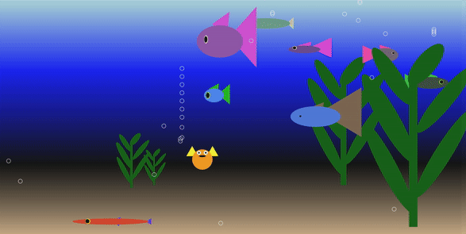

Final Project: Animation / Game Option
This final project option asks you to apply what you’ve learned to create an animated, interactive terrarium, aquarium, or space odyssey. To get an idea of what you might make, please see the sample videos (as well as the animated gif below). I have also included some projects from last semester:
- Space Cannibal, by Quentin Hess
- Platform Game, by Henry Shaw & Davin Shim
Most of these samples shown above have gone above and beyond the assignment specifications (and thus earned extra credit), but please know that meeting the assignment’s minimum requirements is sufficient for earning all the available points. Please calibrate your implementation according to your experience level with programming (i.e. do more if you’re more experienced): you’ll get out of it what you put into it. See the rubric below to get a sense of how you will be evaluated on this assignment.

Created by Rachel Smith (Berkeley City College)
Deliverable Deadlines
| 04/17 | 15pts | By the midpoint deliverable, you must complete a rough draft of Parts 1-3 and have at least two distinct animations from Part 4 |
| 04/19 | 5pts | Share your progress with a few of your classmates |
| 05/02 | 30pts | By the final deliverable, you must complete all of the specifications listed. Please read the requirements very carefully. |
Your Tasks
1. Create a drawCreature function
Create a custom function called drawCreature (or 2 custom functions if you’re working in pairs) that makes a creature of your choosing. Your function should have at least 4 parameters:
- An
xparameter, specifying the x-position of the center of your creature (should be a number). - A
yparameter, specifying the y-position of the center of your creature (should also be a number). - A
sizeparameter, specifying the size of the creature. - A
primaryColorparameter, specifying the primary color of the creature. In the case of the bear, this is the face color. - A
secondaryColorparameter, specifying the secondary color of the creature. In the case of the bear, this is the ear color.
You may also add any additional parameters, but they must be optional, not required. This means that you will need to give any optional parameters a default value. (hasSunglasses=true, hasSmile=true, tertiaryColor=’hotpink’). Feel free to use the random module to create creatures with ‘surprise’ features.
You are also welcome to create additional creature functions (if you want different kinds of creatures to be present in your terrarium / aquarium). That said, please ensure that your main creature function is called drawCreature. Any additional creature functions can be named anything that you want and work in any way you want. Up to 3 points will be given for creatures that go above and beyond.
2. Create a drawLandscapeObject function (4 points)
You have already experimented with stars and bubbles in Homework 4. Here, you will make an object of your own choosing (e.g. a tree, a building, a rock, grass, coral, etc.). To do this, you will create a custom function called drawLandscapeObject (or 2 custom functions if you’re working in pairs) that draws a landscape feature of your choosing. It should have at least 3 parameters:
- An
xparameter, specifying the x-position of the center of your creature (should be a number). - A
yparameter, specifying the y-position of the center of your creature (should also be a number). - A
sizeparameter, specifying the size of the creature.
You may also add any additional keyword parameters of your choosing to make your landscape object even more customizable (e.g.: color=’red’, texture=’rough’).
You are also welcome to create several different landscape feature functions to make different landscape features. Note that while your main landscape function must be called drawLandscapeObject, any additional landscape feature functions can be named anything that you want. Up to 3 points will be given for fantastic landscape features.
3. Initialize your interactive scene
Within the draw() function, you will create your interactive scene. This involves (a) instantiating some background creatures (using your drawCreature() function), and (b) creating some landscape features (using your drawLandscapeObject() function).
a. Background creatures
Instantiate at least 3 different creatures in your landscape, located at different positions, and with varying sizes (and colors and features — optional). You may use a loop (and perhaps a random function) to position your background creatures, or you can intentionally place your background creatures in specific places — or some combination of the two.
b. Landscape features
Instantiate at least 3 instances of your landscape feature (in the same manner as you did with your background creatures).
4. Animate your scene
Animate the creatures in your landscape by picking five of the following effects to implement:
| Num | Task |
|---|---|
| 1 | Animate one or more of your creatures. If your creature(s) move off of the screen, recreate them on the other side or have them bounce off the side. |
| 2 | Experiment with different kinds of motion. Instead of your creatures moving linearly at a constant speed, you can experiment with the Math.sin and Math.cos functions (or any others techniques) to make your creature oscillate, accelerate, decelerate, etc. |
| 3 | Spawn a new creature or landscape object when the user either clicks or drags or right-clicks the screen. |
| 4 | Animate each of your creatures so that their movement is slightly different (different speeds, different movement patterns). |
| 5 | Enable your user to control one or more of your creatures using keyboard events (pressing the up/down arrow, using the spacebar, etc.) |
| 6 | Periodically add or remove creatures to/from your scene. |
| 7 | When you click a creature, remove it from the screen. |
| 8 | Detect collisions, and do something interesting if creatures collide with another object. |
| 9 | Enable the user to reposition a creature or landscape feature by dragging it |
| 10 | Create some game mechanics (space bar jumps or shoots, drag ‘flings’ an object, etc.). |
| 11 | Make your creature or landscape feature periodically change colors. |
5. (Optional) Extra Credit (Up to 8 points)
If you have already implemented the 5 features above and would like to earn extra credit, I will award up to 8 points extra credit for pursuing the following enhancements:
- Implementing an additional animation. Each additional animation that you add from this list above (beyond the 5 that are required) will earn 3 points extra credit.
- Making an additional creature function (3 pts).
- Making an additional landscape function (3 pts).
- Making a landscape / creature function that goes above and beyond – i.e., more than 8 shapes (3 pts).
6. Create a short video
Please create a short video (between 20 seconds and 1 minute…nothing too involved) of your interactive scene in action. To do this:
- Take a screencast. For Mac users, QuickTime works, and is free. Zoom also enables you to record your screen.
- Upload it to Google Drive.
- Share your Google Drive video so that anyone with link can view.
Resources to Check Out
- To download the starter kit: https://p5js.org/download/support.html
- Get Started (the “hello world” example): https://p5js.org/get-started/
- Learn: https://p5js.org/learn/
- Examples: https://p5js.org/examples/
Policy on sample code and collaboration
YOU MAY….
- Make use of any sample code that I have provided you at any point during the course
- Consult with and incorporate ideas from Internet sources, so long as you are typing the code for yourself (not copying) and understand how every line of it works.
- Help each other debug your code and discuss ideas together.
YOU MAY NOT…
- Share code — or look at your neighbor’s screen and transcribe their code. I have plagiarism detection software to flag code similarities (e.g. MOSS) — even when whitespace, variable names, and ordering have been changed.
- Blindly copy code from third-party sources and/or incorporate programming techniques that you don’t understand. You are welcome to find code online to get ideas. But you need to be able to understand how the code works in order to use it (feel free to come to office hours and we can discuss code you find online).
- Ask other people to write code for you.
What to Submit
Please Read Carefully: To submit each of your project deliverables, please follow the instructions below:
Midpoint Deliverable (Due 4/17)
On your homepage, create a section called “Projects”. Underneath this section, include links to:
- Your animation / game (midpoint)
- Your presentation slides
When you’ve created these links, and committed / synced them to GitHub, please include the following information in your Moodle submission:
- A link to your homepage (GitHub pages)
- A link to your GitHub code repository
- If you worked with a partner, list your partner
Final Project Deliverable (Due 5/02)
Inside of the “Projects” section of your homepage, include links to:
- Your animation / game (final)
When you’ve created these links, and committed / synced them to GitHub, please include the following information in your Moodle submission:
- A link to your homepage (GitHub pages)
- A link to your GitHub code repository
- If you worked with a partner, list your partner
- If you did any extra credit, please list what you did, so that I can make sure I give you the appropriate points.
- You may earn up to 8pts extra credit.
Rubric (for Final Project)
30 points possible + extra credit:
| Feature | Points | Scoring Guidelines |
|---|---|---|
| Creature function | 4 |
Function enables creature to be customized by size and position.
|
| Landscape function | 4 |
Function enables landscape object to be customized by size and position.
|
| Initialize your interactive scene | 4 |
|
| Animate your landscape | 15 |
|
| Code Quality | 1 |
|
| Video | 2 |
|
| Extra Credit | Maximum of 8 |
For projects that exceed expectations in any of the following ways:
|